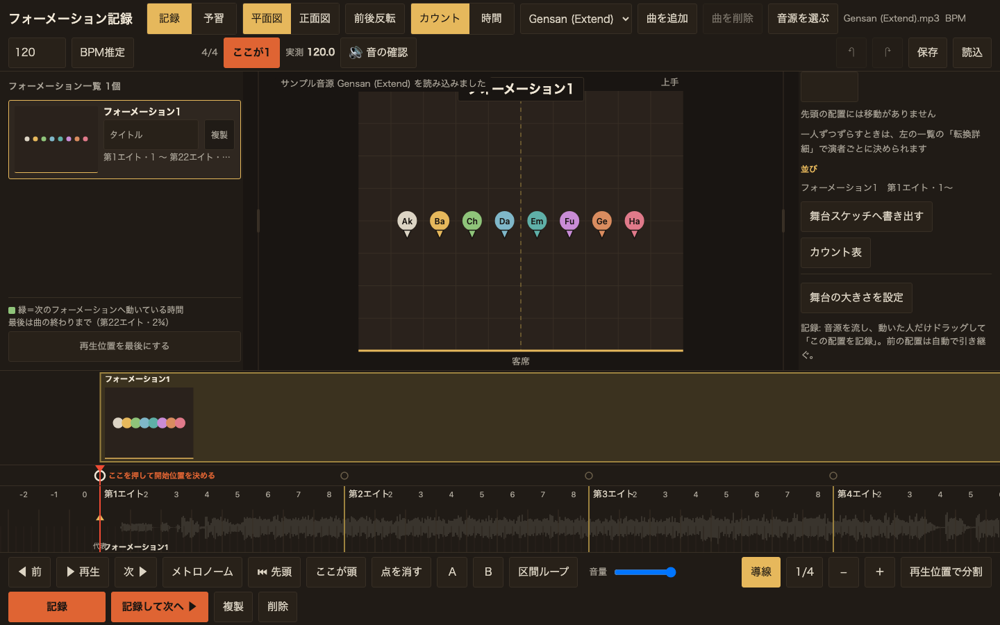
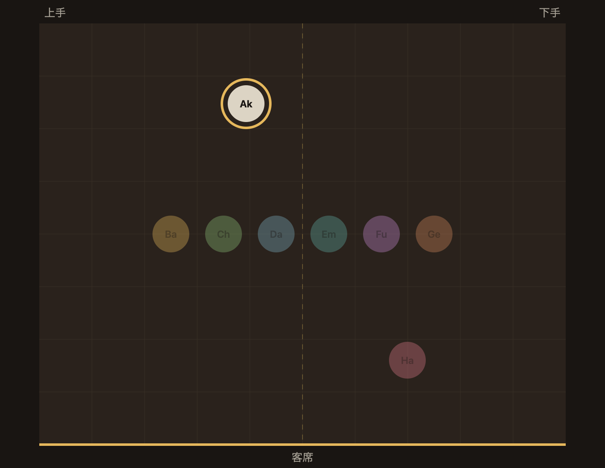
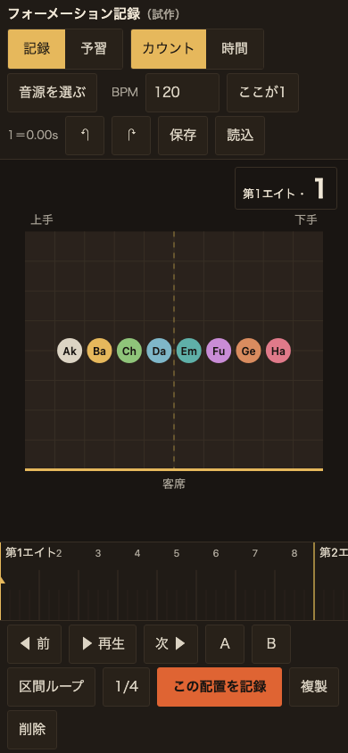

フォーメーション記録 M1 設計パック — 参照ブリーフ・設計メモ・トークン・試作の検証
判断してほしいこと
P1. 試作を iPad とスマホで触り、次の3操作が「稽古の速さに追いつく」か判断する。
①音源を流し、動いた人だけドラッグして「この配置を記録」（前の配置を引き継ぐ）／②「全員」→「左右入替」、2人選んで「名前交換」→記録／③「予習」で自分を選び「前／次」で送る。 所要は5分。感想はそのまま次の発注書（M2）の要件に落とす。
本人回答（同日）: 「左右入替」「名前交換」のボタンは使わない気がする。入れ替えは駒を別の駒の上に落としたら入れ替えで。→ v2 で実装（ボタン2つを削除）。
①音源を流し、動いた人だけドラッグして「この配置を記録」（前の配置を引き継ぐ）／②「全員」→「左右入替」、2人選んで「名前交換」→記録／③「予習」で自分を選び「前／次」で送る。 所要は5分。感想はそのまま次の発注書（M2）の要件に落とす。
本人回答（同日）: 「左右入替」「名前交換」のボタンは使わない気がする。入れ替えは駒を別の駒の上に落としたら入れ替えで。→ v2 で実装（ボタン2つを削除）。
P2. 8カウントの帯を「主な移動手段」にする方針でよいか。
秒のタイムラインは出さず、帯のタップ・横ドラッグと「前／次の配置」で動く。Choreographic／Stancz の秒表示と違う点。
本人回答: それでよい。ただし移動時間もあるので難しいところ。→ v2 で各配置に「何カウント前から動き始めるか」（既定4・¼刻み）を持たせ、それまでは前の位置で待つ。帯には移動区間を薄く敷く。
秒のタイムラインは出さず、帯のタップ・横ドラッグと「前／次の配置」で動く。Choreographic／Stancz の秒表示と違う点。
本人回答: それでよい。ただし移動時間もあるので難しいところ。→ v2 で各配置に「何カウント前から動き始めるか」（既定4・¼刻み）を持たせ、それまでは前の位置で待つ。帯には移動区間を薄く敷く。
G4（新規）. 拍を打ち直したとき、既に記録した配置は「カウント」を保つか「時刻」を保つか。
記録用途（動画を見ながら）なら時刻を保つ方が自然に見えるが、稽古の言葉はカウント。試作はカウントを保つ。M2の仕様で決める。
記録用途（動画を見ながら）なら時刻を保つ方が自然に見えるが、稽古の言葉はカウント。試作はカウントを保つ。M2の仕様で決める。
P3. 現在カウントの表示を「第1エイト」小＋「1」大に分けた形でよいか。
稽古で口にする順（エイト→拍）に合わせ、拍の数字だけを一目で読めるようにした。
本人回答: よい。加えてカウントでなく時間で考える切替も欲しい。→ v2 で「カウント｜時間」の切替を追加（データは常にカウントが正本。時間表示では秒が主・カウントが従、帯は1秒／5秒の目盛り、移動の入力も秒）。
稽古で口にする順（エイト→拍）に合わせ、拍の数字だけを一目で読めるようにした。
本人回答: よい。加えてカウントでなく時間で考える切替も欲しい。→ v2 で「カウント｜時間」の切替を追加（データは常にカウントが正本。時間表示では秒が主・カウントが従、帯は1秒／5秒の目盛り、移動の入力も秒）。
1. 参照ブリーフ（直接開いて確認したもの・2026-09-11）
| 参照 | 役割（何を学ぶか） | 採るもの | 採らないもの |
|---|---|---|---|
| Choreographic（App Store／公式） | 同じ課題を解く実製品。網羅の基準 | 機能の成果一覧（計画9章の網羅表）。色でのグループ選択、メモ、オフライン、波形 | 秒のタイムライン主役、3D、クラウド権限、ライブラリ（置換・保留） |
| Stancz（振付師向けWeb/モバイル） | 隣接の実製品。記録と学習の導線 | 「自分のポイントを追う」ハロー（予習の核）、タップでテンポ、色分け波形、フルスクリーンの提示モード、ドラッグ中のルーペ（スマホの精度・後日） | プリセット隊形の1クリック配置（記録用途では優先度低）、役割3種の組織機能 |
| Stage Write（ブロッキング記録の標準） | 舞台の記録文化。演者が自分のノートを持つ | 記録＝「動いた駒だけ直す」、演者側の閲覧と自分用メモ（舞台スケッチの事前学習リンクと同じ思想） | 台本・キュー入力（舞台スケッチ本体の領域） |
| Ableton Live セッションビュー（隣接分野） | 拍に揃えて始める・区間を繰り返す操作 | ローンチ量子化の考え方＝記録位置を最小単位に吸着、A/B の区間ループ、1操作で複数を同時に | クリップ格子の見た目 |
| MDN 自動再生ポリシー（プラットフォーム） | 音源再生の制約 | 再生はユーザー操作のボタンから開始し、play() の拒否を捕まえて案内を出す。iOS は playsinline | — |
舞台スケッチ本体（../design/TOKEN_SHEET_skin_2026-09-10.md、../style.css） | 家族の同一性 | 赤みの黒の机、乳白の文字、錆と真鍮、角丸3px、影なし | — |
討論の相手として Codex（gpt-6-astra）が Stage Write・Stancz・Ableton を挙げ、Claude が各サイトを開いて内容を確認した。Stancz の「追跡モード（ハロー）」は本人回答（記録→予習）に最も合う先行例。
2. 設計メモ（第一案の前の5つの問い）
- 誰が・どの場面で・何を達成するか: 記録者（演出家・振付助手）が稽古の動画や音源を流しながら iPad 横で「完成済みの振付」を記録する。演者は本番前にスマホ縦で自分の動きを予習する。
- 使っている間・使い終えた後の気分: 記録中は「動画を止めずに追いつける」速さ。予習は「自分の次の一歩がすぐ分かる」安心。
- 固有の核: 時間軸を秒でなく稽古場の言葉（8カウント）で持つ。客席側からの見え方を常に横に置く。「見せ場（代表カウント）」から組み立てる。会場を替えても配置が残る（舞台スケッチの正規化座標）。記録の出力がカウント表という紙になる。
- 踏襲するもの／意図的に外すもの: 踏襲＝駒をドラッグして置く、再生・停止、波形、色でのグループ。外す＝秒のタイムライン主役（→8カウントの帯）、3D（→導入後に舞台スケッチのFPV）、ダンサーの自動回避（→警告だけ）、クラウド・ライブラリ（→舞台スケッチの事前学習リンク）、AI生成らしい丸いカードや発光の装飾。
- 守る機能条件: iPad 横 1194×834／スマホ縦 390×844、タップ 44px、オフラインで完結（ローカル保存）、iOS の音源はユーザー操作後に再生、canvas 描画で駒 8〜20 人、
prefers-reduced-motion、単体 HTML だけで動く（F1）。
内部で比較した構造案: (A) 秒タイムライン＋配置一覧（Choreographic 型）／(B) 8カウントの帯＋舞台＋客席側プレビュー（採用）／(C) 配置カードの一覧を主役にし舞台は補助（記録は速いが動きの連続が見えない）。(B) を採った理由は、記録者が口にする言葉（第3エイト・1）と画面の目盛りが一致し、予習する演者も同じ目盛りで会話できるため。
3. デザイントークン
正本は formation/design/TOKEN_SHEET.md。配色は舞台スケッチの机の色を継承し、contrast.mjs で全組み合わせを実測（本文 4.5:1 以上、UI 3:1 以上）。ダンサー8色はすべて背景に対して 6.3:1 以上で、駒には常に頭文字を描き色だけに頼らない。
4. 試作（固定HTML・製品コード非接触）
場所:
入っているもの: 8人・舞台10×8m、BPM と「ここが1」（第1カウントの秒位置）、8カウントの帯（最小単位 1／½／¼・G1）、駒のドラッグ（複数選択）、「この配置を記録」（前の配置を引き継ぎ、直した分だけ確定）、複製・削除、全員・左右入替・名前交換、区間ループ A/B、前／次の配置、メモ（カウント表の行）、Undo／Redo、JSON 保存・読込、自動保存、予習モード（自分を選ぶ・ハロー・他を薄く・次の位置と経路）。
入っていないもの: 曲線経路、カウント表の書き出し、複数曲、舞台寸法の編集、共有。（波形は v3、BPM測定・拍の地図・拍子変更は v4、①②③の手順とクリック確認は v5 で追加）
formation/prototype/record-from-video.html（単体で開ける）。このMacでの配信中URL: http://127.0.0.1:8941/formation/prototype/record-from-video.html（停止後の再起動: shosai-app をcwdに python3 -m http.server 8941 --bind 127.0.0.1）。入っているもの: 8人・舞台10×8m、BPM と「ここが1」（第1カウントの秒位置）、8カウントの帯（最小単位 1／½／¼・G1）、駒のドラッグ（複数選択）、「この配置を記録」（前の配置を引き継ぎ、直した分だけ確定）、複製・削除、全員・左右入替・名前交換、区間ループ A/B、前／次の配置、メモ（カウント表の行）、Undo／Redo、JSON 保存・読込、自動保存、予習モード（自分を選ぶ・ハロー・他を薄く・次の位置と経路）。
入っていないもの: 曲線経路、カウント表の書き出し、複数曲、舞台寸法の編集、共有。（波形は v3、BPM測定・拍の地図・拍子変更は v4、①②③の手順とクリック確認は v5 で追加）



5. 検証記録
v29〜v30（本人「タイムラインの上にもう一段。そこで動かせるように」「長さもドラッグで」「段を高くしてサムネイルを」「名称はフォーメーション、1・2・3…と自動採番、サブタイトルとメモも」）: タイムラインが3段になった。上からフォーメーションの段・鍵の段（合わせ直しの点）・タイムライン（目盛りと波形）。赤い再生位置が3段を貫く。フォーメーションの帯は、つかんで動かすと頭が移り、右端をつかむと長さ（次の頭の位置）が変わる。前後の配置を追い越さないよう止まる。帯の中には見出し（フォーメーション1・2・3…＋サブタイトル）とサムネイル（そのときの舞台の形を小さな平面図で。客席側の辺も描く）とメモを出す。狭いときはサムネイルを省く。側パネルでサブタイトルとメモを入力でき、一覧にも出る。名称は「場面」からフォーメーションへ統一。検証: 段の高さ、帯の範囲（1〜17／17〜曲末）、サブタイトルとメモの読み書き、一覧の表示（「フォーメーション1 サビ入り 第3エイト・1〜中央を空ける」）、右端ドラッグで次の頭が動くこと。design-lint NG 0・WARN 0。
v31〜v33（本人「帯をもうちょっと大きく。高さが今の倍」「タイムラインの拡大縮小を。Premiere ProやLogicと同じ操作で」）: フォーメーションの段の高さを68pxから136pxへ（スマホは60→120px）。サムネイルは段の高さに追従して大きくなり、メモは折り返して最大5行まで出る。タイムラインに拡大縮小を入れた。操作は3通り。①操作行の「−」「＋」ボタン、②Cmd（Ctrl）＋ホイールでポインタの下のカウントを固定したまま伸縮、③＋ / − キー。倍率は0.15〜12倍に収め、ブラウザに保存して次回も引き継ぐ。検証: Cmd+ホイールでポインタ位置のカウント9.53が拡大前後で変わらないこと、キーとボタンで倍率が1.3倍ずつ動くこと、段の高さ実測（120px）。ボタンが44px未満だったため正方形（44×44）に直し、design-lint NG 0・WARN 0（1440×900）。
v34（本人「フォーメーション1欄を左側に」「1個だけだと曲の最後まで行ってしまうので直せるように」「ドラッグで長さを変えるのができなさそう」）:
画面の左にフォーメーション一覧の欄（216px）を追加。カードには番号・サブタイトル・その形の平面図・メモ・区間を出し、押すとその頭へ飛ぶ。いま鳴っている場所のカードに枠が付き、変わったときだけ見える位置へ送る（毎フレーム動かすと手でスクロールできないため）。
最後のフォーメーションの終わりを持てるようにした（
scenePlan.endCount・null＝曲の終わりまで）。決め方は3通り。①帯の右端をつかんでドラッグ ②左の欄の「再生位置を最後にする」 ③戻すのは右端のダブルクリックか「曲の終わりまで戻す」。
★不具合の原因: 右端のつまみは次のフォーメーションがある帯にしか描かれていなかったので、1個だけのときは取っ手が存在しなかった。加えて取っ手の位置が曲末＝画面外で、拡大していると絶対に届かない。つまみを最後の帯にも出し、かつ再生位置から決める道も用意した（画面外にしか無い操作は無いのと同じ）。
★番号の食い違いを修正: 帯・波形・左の欄・右の一覧・書き出し・カウント表がそれぞれ別々にフォーメーションの並びを組んでいたため、波形だけ番号が1つずれていた。formationGroups() を番号の正本にして6か所を統一。
検証: 途中の帯と最後の帯のドラッグ、ダブルクリックでの復帰、頭より前を指したときに断ること、6つの表示の番号一致、書き出しに endCount/endSec が載ること。design-lint NG 0・WARN 0（1440×900）。v35（本人「⌘Zで元に戻るを使えるように」「フォーメーション2を登録したのにプレビューにも一覧にも出てこない」）:
★出てこない原因＝考え方の食い違い。コードは「記録＝配置（通過点）」「フォーメーション＝別に区切るもの」という二層で、記録してもフォーメーションは1つも増えなかった。本人の作り方は「1回の記録＝1つのフォーメーション」なので、記録したらその場でフォーメーションとして登録するように既定を反転した。二層の構造は残したまま、右のチェック「独立したフォーメーションにする」を外すと前のフォーメーションの途中の動きになる。保存済みのデータも読み込み時に1度だけ引き上げる（区切りが0で配置が複数あるとき）。
★⌘Zの不具合:
e.key === "z" で比べていたため、Shiftを押すと e.key が大文字 "Z" になる ⌘⇧Z（やり直し）が一度も発火していなかった。小文字に落として判定し、preventDefault と ⌘Y も追加。戻せる回数をボタンの説明に出し、戻せないときはボタンを無効にした。
検証: 「記録して次へ」3回で一覧・帯・波形すべてに1・2・3が並ぶこと、チェックを外すと途中の動きに変わること（配置の数は変わらない）、⌘Zで戻り ⌘⇧Z（大文字Z）でやり直せること、v34以前の保存データが読み込みだけで並ぶこと。design-lint NG 0・WARN 0。v36（本人「移動が始まるタイミングもタイムライン上で分かるように色で。フォーメーションの後半が緑で転換の時間」）:
フォーメーションの帯の後半を緑にした。緑の始まりが動き始めるカウント（次のフォーメーションの頭から travel カウント前）、緑の終わりが到着。始まりに縦線を引き、幅があれば「移動 4」と長さを書く。手前のフォーメーションの頭より前には食い込ませない。
左の一覧にも「次へ移動 4カウント（第1エイト・5から）」を出し、欄の下に緑の意味を1行置いた。色は
--move:#8fc47a（塗りは34%）。
★ついでに直した不具合: 縦に並べた一覧のカードが縮んで潰れていた（高さ165pxのはずが65px・平面図も文字も圧縮）。flexの既定で項目が縮むため。flex:0 0 auto を付けて、縮ませずスクロールさせるようにした。
検証: 移動区間の開始カウント（第1エイト・5＝頭の4カウント前）、一覧の表示、カードの実寸165px、design-lint NG 0・WARN 0。v37（本人「丸とロックの2択だけに。開始位置は最初に指定させ、ロックがかかっていないと作業が始まらないように。開始位置を後から動かすことは特別にできる設計に」）:
鍵の段を2択にした。丸＝まだ決めていない／閉じた鍵＝ここが頭だと決めた。押すたびに行き来する。開いた鍵（動かせる状態）という中間をやめ、決めた点は鍵のまま秒数をつかんで動かせるようにした（波形の点線からも動かせる）。
開始位置だけ特別。決まるまで赤い丸と「ここを押して開始位置を決める」を出し、上の「ここが1」も赤くする。決まるまで記録と「記録して次へ」は止める（ダイアログは出さず、押したときに理由を伝える）。一度決めたら外せないが、秒数をつかめば後からいつでも動かせる。
検証: 起動直後は記録が止まること、開始の丸を押すと記録できるようになること、他のエイトが丸⇄鍵で行き来すること、開始位置は外せず動かせること、波形からも動かせること。design-lint NG 0・WARN 0。
経緯: 同じ回に「3段（丸・解除・ロック）にする」と指示があり実装しかけたが、本人がその場で2択へ変更。3段の実装は入れていない。
v38（本人「間違えて押して外れても、キューポイント自体はいじるまで変わらない状態＝開いた鍵。結局3種類のアイコンに。丸は完全フリーでロック間の均等なBPM」）:
鍵の段を3種類に確定。押すたびに 丸 → 閉じた鍵 → 開いた鍵 → 丸。
丸＝点なし。前後のロックの間を均等に割る（＝その区間は一定のテンポ）。
閉じた鍵＝その時刻で固定。つかんでも動かない（誤操作で位置が変わらない）。
開いた鍵＝時刻はそのままで、つかんで動かせる。ロックを誤って外しても位置は1ミリも変わらない。
開始位置だけは丸へ戻らない（閉じた鍵 ⇄ 開いた鍵の2つを行き来する）。波形の点線からも、開いているときだけ動かせる。
緑の移動区間を帯の上でドラッグできるようにした。緑の左端をつかんで左右に動かすと「何カウント前から動き始めるか」が変わり、右パネルの数値と一覧の表示も追随する。移動が0のときは緑が出ないので、右パネルの数値から戻す。
演者の向きを、駒の縁の小さな三角から外へ伸びる細長い三角に変更（先端 r×1.85・付け根の半幅 r×0.40・暗い縁取り）。8方向が離れて見ても読める。
検証: 3状態の循環と、ロック解除で秒数が変わらないこと（4.000s のまま）、ロック中はドラッグを断ること、開始位置が丸へ戻らないこと、緑のドラッグで travel が 4→6→4.75 と変わり右パネルと一覧が一致すること。design-lint NG 0・WARN 0。
v39（本人「曲線の移動経路を実装したい。フォーメーション1の後に2が来ているならその導線を引けるように。導線の表示/非表示のトグル。右のメニューは全部アコーディオンで三角を押したら開閉」）:
導線＝いまのフォーメーションから次のフォーメーションへ、全員ぶんの移動を舞台の平面図に破線で引く。選んでいる人は濃く出る。動かない人には引かない。予習モードは自分だけ。
曲線は2次ベジェ。行き先の pose が控え点
cu,cv を持てば曲がり、無ければ2点の中点＝直線になる（既存データはそのまま直線）。線の真ん中のつまみをつかむと曲がり、ダブルクリックでまっすぐに戻る。曲げた経路は補間にも効くので、再生すると人が弧を描いて動く。記録し直しても曲がりは残す。
表示の切り替えは下の操作行の「導線」ボタン（押した状態が保存され、次回も引き継ぐ）。
右のパネルを6つのアコーディオンに（現在のカウント／客席側から／ダンサー／この配置への移動／この配置／フォーメーション）。三角を押して開閉し、開いているかどうかを覚えておく。
★2度踏んだ罠: b && b.cu は b が null のとき null を返し、Number(null)===0 なので「有限」判定を通ってしまう。記録のたびに例外が出て、配置が増えない状態になった（v34 の endCount と同じ原因）。
★もう1つの罠: 範囲置換で終了タグを文書の先頭から探したため、開始位置より前にある別の </aside> に当たって範囲が逆転した（左の欄を足したときに増えていた）。開始位置より後ろから探すように直した。
検証: 導線8本の描画、曲げると補間の中点が (0.515,0.625)→(0.358,0.362) に動くこと、ダブルクリックで戻ること、トグルでつまみごと消えること、アコーディオンの開閉と保存。design-lint NG 0・WARN 0。v40（本人「フォーメーションを新たにいじり始めたら、4・5・6と勝手に増やしていって。平面図の上部に、いまどのフォーメーションかを書いて」）:
いじったら、その場が新しいフォーメーションになる。駒を置いた瞬間に確定し、番号が自動で増える（⌘Zで取り消せる）。すでに配置があるカウントでいじった場合は、その配置を更新するだけで番号は増えない。向きを変えたときは、回し終わって0.5秒待ってから確定する（ホイールで連続して回しても1回にまとまる）。開始位置が決まるまでは作られない。
平面図の上に見出しを常時出す。「フォーメーション3 サビ入り」、移動中は「→ フォーメーション4 へ移動中」と続ける。
★ついでに直した当たり判定: 鍵の段の上端は再生位置の三角のつかみ代だが、丸や鍵と縦に重なっていて、丸の上側を押すと再生位置が動いてしまっていた。同じ位置に丸や鍵があるときは、少しでも下なら丸や鍵を優先する。
検証: いじるたびに 2→3→4 と増えること、同じカウントで2回目は増えないこと、⌘Zで4→3→2と戻り ⌘⇧Zで戻ること、見出しの移動中表示。design-lint NG 0・WARN 0。
v41（本人「一覧からフォーメーションの複製を。フォーメーション1だけクリックしても最初に飛ばない。一覧をドラッグで並べ替え、ただし時間の幅は変えたくない。下のメニューに『再生位置でフォーメーションを分割』を」）:
複製: 一覧の各カードに「複製」（平面図の横・44×44）。押すといまの再生位置にそのフォーメーションの形・サブタイトル・メモをそのまま複製する。すでに配置があるカウントでは断る。
先頭へ飛ぶ: 帯はどれを押してもまずその頭へ飛ぶようにした。先頭のフォーメーションだけ「動かせません」で止まっていて、飛ぶ処理まで届いていなかった。
並べ替え: 一覧のカードをドラッグして落とすと順番が入れ替わる。時間の枠（それぞれの長さ）はそのままで、中身だけが入れ替わる（実測: 枠 1・9・13・17・25 は不変、形だけが移動）。2番目以降には必ず区切りを付け直す（付いていないと前のフォーメーションに吸収されるため）。
分割: 下の操作行に「再生位置で分割」。配置が無ければその場の見た目を新しいフォーメーションにし、途中の通過点の上なら、その点をフォーメーションの頭に格上げする。
★操作行が画面からはみ出していた: 1024幅で779px分が隠れ、「記録」すら画面外だった（横スクロールなので気づけない）。上下の行を折り返すようにして、全部のボタンが常に見えるようにした。
★報告の誤り: v40・v41 の design-lint は実行できておらず、表示していた「NG 0」は v38 の古いレポートだった。日付が変わってレポートの保存先が
2026-09-11_… から 2026-09-12_… へ移ったのに、こちらは古いパスを見続けていた。出力を /dev/null に捨てていたため失敗にも気づけなかった。実行し直して NG 0・WARN 0 を確認済み。v42（本人「演者それぞれの色を変えられるように。名目は『演者』にして舞台スケッチと同じ仕組みに。舞台スケッチで設定できる項目は全部編集できるように。ただし実装では、この値はこちらからは変えられず舞台スケッチ側でのみ変える」）:
用語をダンサー→演者へ。データも
doc.dancers から doc.cast へ（読み込み時に古い保存を読み替え、書き出しも cast に。古い dancers も読める）。
項目は舞台スケッチのキャストと同じ: 名前(24字)・色・身長(120〜210cm)・メモ(200字)・錠・見た目（肌／髪の種類と色／上の種類・袖・色／下の種類・丈・色）。選択肢と既定値も舞台スケッチから写した（Tシャツ・長袖シャツ・タンクトップ／袖なし・半袖・七分袖・長袖／長ズボン・半ズボン／ミニ・膝丈・ミディ・足首丈・床丈）。
右の「演者」の欄では色と名前をその場で変えられる。残りの項目は「演者の詳しい設定」（ダイアログ）で編集する。舞台の大きさも同じダイアログ。
★実装での扱い: castEditable が false のときは全項目が読むだけになり「演者の登録は舞台スケッチ側で編集します」と出る。?cast=locked で今すぐ試せる。組み込み版はこの状態で動かす。
左のフォーメーション一覧を 360px に広げ、平面図を左・情報を右に横並びにした。カードの高さは 165px→108px。フォーメーションごとにタイトルを一覧から直接書ける（先頭のフォーメーションは、書いた時点で区切りを作る）。
★作業で3つ壊した: ①入力のたびに欄を作り直していて、開いた欄も入力も消えた（作り直しは人数が変わったときだけに）。②ハンドラが器を掴んでいて、整えるたびに作り直される doc.cast の古い器へ書き込んでいた（押されたときに id から引き直す）。③範囲置換の目印が一意でなく、関数を1つ丸ごと消した（syncCastSummaries と renderCastEditor が同じ行で始まっていた）。
design-lint NG 0・WARN 0（途中、select に背景色が無く 48件、演者の欄が長すぎてボタンが画面外で 8件。どちらも直した）。v43（本人「一覧のサムネイルは上下に余りがあるので最大まで大きく。『動き出しラグ』を作る。転換で一人ずつ動き出せるように、一覧の『転換詳細』を押すと下に開いて、演者ごとに出発と到着をそれぞれ前倒しできる。秒とカウントを選べて既定はカウント」）:
サムネイルを 78×62 から 120×96 へ（カードの高さに合わせて上限まで）。カードは 138px。
動き出しラグ: 行き先の配置の演者ごとに
lead（出発をどれだけ早めるか）と early（到着をどれだけ早めるか）を持たせた。値はカウントで保存し、秒表示のときだけその場で換算する（テンポが変わっても意味が保たれる）。マイナスにすれば遅らせられるので、一人ずつ順に動き出すのはこの差で作る。
置き場は一覧のカードの「転換詳細」（押すと下に開く・同時に開くのは1つ）。演者ごとに「出発」「到着」の2つの数値と、単位の選択（カウント／秒・既定はカウント・選んだ単位は覚える）。
帯の緑の区間はいちばん早い出発まで伸びるので、転換全体がいつ始まるかが見たままになる。記録し直してもラグは残る。
検証: ラグありは第1エイト・4で動き出し第8で到着済み、ラグなしは第4でまだ待ち第8でまだ途中（4項目すべて一致）。120BPMで2カウント＝1秒の換算、秒で1.5と入れると3カウントで保存されカウント表示に戻すと3。design-lint NG 0・WARN 0。v44（本人「左右のパネルはドラッグで横幅を変えられるように」）:
左右の欄と舞台のあいだに境目を入れ、つかんで横幅を変えられるようにした。変えた幅は覚えていて次回も引き継ぐ。ダブルクリックで元の幅（360／300）に戻る。境目を選んで左右キーでも10pxずつ（Shiftで40px）動かせる。
欄は200〜620px、舞台は320pxを割らない。両方を広げすぎたときは、両方から同じ割合で引く。
★持つのは「望んだ幅」、出すのは「収まる幅」。縮めた結果を保存値へ書き戻すと、片方を元に戻したときにもう片方が縮んだままになる。つかみ始めの基準はいま出ている幅にして、値とずれていても跳ねないようにした。
★溝は24px、つかむ幅は44px。6pxだと指では届かず design-lint のタップ基準にも落ちる（NG 2件）。はみ出す10pxは両隣の余白（触るものが無い所）に重ねた。カードの左端を押すとカードが拾い、溝の中心を押すと境目が拾うことを実測で確認。
design-lint NG 0・WARN 0。舞台が320pxを割らないことを、目一杯広げる操作を含めて5通りで確認。
v45（本人「演者の名前が並んでいる部分は必要ない」「『この配置への移動』は右のフォーメーション情報で操作できるように」）:
右の欄の演者の名前の並び（選択チップ）を記録モードでは出さないようにした。舞台の駒を直接押せば選べるため。予習モードでは残す（「自分」を選ぶ唯一の手段のため、見出しも「自分を選ぶ」のまま）。代わりに「全員を選ぶ」の横へ、駒を押して選ぶこと・Shiftで追加できること・入れ替えのやり方を一行で置いた。
「この配置への移動」を独立した項目から外し、「フォーメーション情報」の中へ移した（同じ節に「このフォーメーションへの移動」と「並び」を置く）。一人ずつずらしたいときは左の一覧の「転換詳細」へ、という案内も添えた。
右の欄は 5つになった（現在のカウント／客席側から／演者／この配置／フォーメーション情報）。design-lint NG 0・WARN 0。
v46（本人「一つにしましょう」）:
右の欄の「この配置」と「フォーメーション情報」をひとつの節にまとめた。中は小見出しで3つに分かれる。この配置（区切りにするか・タイトル・フォーメーションのメモ・この配置のメモ）／このフォーメーションへの移動（移動カウントと、一人ずつずらすときの案内）／並び（一覧と書き出し）。
右の欄は 4つになった（現在のカウント／客席側から／演者／フォーメーション情報）。
検証: 統合後もタイトル・2種類のメモ・移動カウント・区切りの付け外しがすべて書き込めること、id の重複と参照切れが無いこと。design-lint NG 0・WARN 0。
v47（本人「小さい『客席側から』は要らない。メインの画面を切り替えて客席側から見られるように。舞台スケッチの正面図のシステムをそのまま持ち込む」「平面図を180度回転させたい。演者目線のほうが分かりやすい人もいる」）:
右の欄の小さな「客席側から」を廃止し、本体の画面を「平面図／正面図」で切り替えるようにした（選んだ側を覚える）。
正面図は舞台スケッチの作りを持ち込んだ。①尺は縦横で一本（間口が収まる尺と高さが収まる尺の小さい方）②手前と奥の倍率差だけを開く擬似パース（奥の間口＝手前の0.62倍）③床の線は下から3割、その下に舞台の立ち上がりと暗がり ④駒の形は実寸比率（肩幅＝身長×0.25）で、描画専用の物差しを作らない。演者は登録した見た目（肌・髪・上・下・身長）で立ち姿に描く。正面図でも駒をつかんで動かせる（左右＝位置、上下＝奥行き）。
持ち込まなかったもの: 骨格と姿勢30種の描き分け。姿勢は舞台スケッチ側の持ち物という切り分け（v24）どおり、ここは立ち姿だけにした。
前後反転: 平面図を180度回して、演者から見た向きで置けるようにした。見え方だけを変え、記録の値は動かさない（客席の辺・上手下手の表記・向きの三角・ドラッグの向きがすべて反転する）。実測: 反転中に画面右へ動かすと記録の u は減る（0.15→−0.05）、通常時は増える（−0.05→0.15）。
★見つけた不具合: 平面図の「上手」「下手」が左右逆だった。舞台スケッチは
u > 0.6 が上手＝画面の右。向き90度＝上手＝画面右とも合っていたので、表記だけが逆。カウント表の「上手／下手」も同じ誤りだったので直した。
design-lint NG 0・WARN 0。v48（本人「なんか勝手に服を着てますが、舞台スケッチの人体モデルを使ってください」）:
v47で作った「服を着た簡略な人型」はこちらの創作だった。舞台スケッチの人体モデルを実際に読んで移植した。
移した中身: 骨格（関節16個を x=左右／y=上下／z=正面向き の3次元で持ち、向きの角度だけ鉛直軸まわりに回して正射影）、胴の断面（首8段＋胴6段。肩・胸・くびれ・腰・股）、手足（付け根から先へ細くなる鎖＋中間の節で腿とふくらはぎのふくらみ）、手と足（手のひらの塊／踵がくるぶしより後ろ）、頭（首から頭への向きに沿った楕円）。奥の手足は色を沈ませ、奥から順に塗る。
★分かったこと: 舞台スケッチは 服を塗っていない。
paintBody は look を受け取るが使っておらず、体は演者の色ひとつのシルエット。見た目の登録（肌・髪・上・下）はデータとして持つだけで、絵にはまだ出していない。だから「服を着せる」は本体に無い振る舞いだった。
姿勢は「立つ」だけを移した（姿勢は舞台スケッチ側の持ち物という切り分け＝v24）。小道具・輪・面・目も移していない。
検証: 正面向き・45度・真横で形が変わること（真横は肩幅ではなく体の厚みの幅になる）、身長145/165/185が見て分かること、奥ほど小さく高いこと。design-lint NG 0・WARN 0。v49（本人「楽曲の複数読み込みを実装しましょう」）:
曲を何曲でも持てるようにした。★カウントの軸は曲ごとなので、配置とフォーメーションも曲ごとに持つ。演者と舞台の大きさは曲をまたいで共通。
形:
doc.songs=[{id, track, frames, scenePlan, heroCount}] ＋ doc.songId。いま開いている曲の中身は従来どおり doc.track / doc.frames / doc.scenePlan / doc.heroCount に置き、保存と履歴の直前に syncActiveSong() で写す。この形にしたので、既存の約100か所の参照は1つも書き換えずに済んだ。
音源は端末で選んだファイルなので保存できない。開いている間だけ曲ごとに覚えておき（波形・包絡・デコード済みの音も一緒に）、戻ってきたら選び直さずに鳴る。
上のバーに曲の選択・曲を追加・曲を削除。曲を足すと、開始位置は未設定・配置は1つの状態から始まる。
検証: 1曲目に3つ記録→曲を追加（配置1・開始位置なし）→1曲目へ戻ると3つと音源が戻る→2曲目へ行くと1つで音源なし。保存の中身も2曲ぶん（3件・1件）。design-lint NG 0・WARN 0。次にやること（本人メモ 2026-09-11）: 楽曲を複数読み込めるようにする。いまは
doc.track が1曲ぶんで、音源・BPM・合わせ直しの点・拍子を1曲しか持てない。複数曲にするなら doc.tracks[]＋各フォーメーションがどの曲のどのカウントかを持つ形になり、カウントの地図・焼き込み・書き出しがすべて曲ごとになる。未着手。v28（本人「先頭を決めてくださいの案内はいらない。消す」「演者の位置を決めて、次の場面、次の場面とどんどんタイムラインに載せていけるように」）: 先頭合わせの案内ダイアログと、記録を止める強制を撤去（先頭は「ここが1」やレーンの鍵でいつでも決められる）。「記録して次へ」を追加。押すといまの配置を記録し、次のまとまりの頭（8カウントなら次のエイトの頭）へ進む。前の配置はそのまま引き継がれるので、動いた人だけ直して、また押すを繰り返すだけでタイムラインに積み上がる。検証: 3回押して 第2→第3→第4エイトの頭へ進み、配置がカウント 1／9／17 に並び、位置が引き継がれることを確認。案内ダイアログは消えた。design-lint NG 0・WARN 0。
v27（本人「もっと離した位置に」「枠が小さく真っ黒で見にくい。せっかくなので演者の色に合わせよう」）: 向きのポップアップをその演者の色を背景にし、文字とボタンを暗色にした。左に三角の吹き出しを付けて、どの駒のものか分かるようにしている。駒から 44px 離し（指と駒が隠れない）、右が狭ければ自動で左へ出る。演者名も表示。ボタンは 40px、角度は 16px 太字。検証: 背景がその演者の色になり、名前と角度を表示、ボタン 40px、右が狭いときは左へ回る。暗文字 on 演者8色はすべて AA 合格（実測）。design-lint NG 0・WARN 0。
v26（本人「向きは側パネルでなく演者のそばにポップアップで」「選択中はスクロールでも回るように（舞台スケッチと同じ）」＋不具合報告）: 不具合: レーンの鍵を動かして先頭を合わせても「先に曲の1を決めてください」と出て記録できなかった。先頭を決める操作を「ここが1」ボタンだけで判定していたため。→ 鍵を動かす・鍵を閉じる操作も「決めた」とみなすように修正。向きの操作: 側パネルの向きの段を撤去し、駒を選ぶとその右隣に小さなポップアップ（角度・左右15度・客席向きに戻す）を出す方式へ。さらに選択中はホイールで回る（舞台スケッチと同じ作法: 1ノッチ=20、15度、Shiftで5度、下へ回すと時計回り、ページは一緒に動かない）。検証: 鍵のドラッグで記録が通る／ポップアップが駒のそばに出て角度を表示／ボタンで15度／ホイール下で戻り上で進む／Shiftで5度／「客席」で0度。design-lint NG 0・WARN 0。
v23〜v25（フォーメーションの記録段階）: 場面の区切りを配置とは別の層で持つ形にした（配置にフラグを付けない）。区切り0なら1曲＝1場面、全部区切ればフォーメーションごとに場面。帯に切れ目と場面名、側パネルに一覧と「舞台スケッチへ書き出す」。向きを配置が持つようになった（0が客席向き・8方向のボタンと45度回転・移動中は近い方へ回る・記録に保存）。姿勢は舞台スケッチ側の領分。交換ファイルの土台（作品の永続ID・版・墓標）。書き出し→読み込み→再書き出しで完全一致し、舞台スケッチ側の領分も向きも失われない。舞台と出演者の設定をダイアログで追加（幅と奥行き、出演者の追加・名前・色・削除。削除は墓標に残る）。カウント表の書き出し＝稽古場で読まれる紙。カウント・時間・場面名とメモ・動く人と行き先（上手／中央／下手＋奥／前）・移動の開始を表にして別タブに開く（印刷可）。検証: 場面の分割と統合、往復の完全一致、設定の反映（舞台10→12m・出演者の追加と削除）、カウント表の生成（「第3エイト・1 ／ 0:09.00 ／ サビ 中央で向き合う ／ アキ→中央、バン→中央 ／ 8カウント前から」）。design-lint NG 0・WARN 0。本人の方針: 最終形はフォーメーションが舞台スケッチの中の画面になる（別アプリではない）。詳細は計画HTMLの14章。
v22（本人「曲に合わせるパネルは不要」「BPM推定は上に1つだけ」「初回は先頭合わせを強制」「拍子も記録できる形式に」）: 側パネルの「曲に合わせる」を撤去し、残す機能だけ上段と操作行へ移した（上段: BPM推定・拍子・ここが1・実測テンポ／操作行: 点を消す）。側パネルは客席側プレビュー・ダンサー・移動・メモだけになった。混みすぎた上段は重複表示（数え始めの秒・経路名）を削って収めた。BPM推定は上段の1ボタン。押すと推定してそのまま BPM に入り、確からしさと他の候補を通知する。先頭合わせの強制: 音源を読み込むと案内のダイアログを1回出す（再生して合わせる／あとで）。決めるまで「ここが1」を赤く強調し、記録しようとすると止めて案内し直す。「ここが1」を押した時点で解除。拍子の記録:
track.meters=[{fromCount,beatsPerBar,beatUnit}] を持たせ、上段に「4/4」と表示。いまは4分の4のみだが、曲の途中で変わる場合に備えて「どのカウントから何拍子か」の配列。変拍子・無拍子の曲の扱いは別途。検証: 初回にダイアログが出る／記録が止まり案内が再表示される／「ここが1」で解除され記録できる／拍子データと表示／側パネル撤去／上段の要素が1440pxに収まる（design-lint NG 0・WARN 0、点検用に ?skipIntro=1 を追加）。削除に伴う参照切れを機械的に洗い出して修正（$("id") の一覧と id="..." の一覧の差分）。旧版 prototype/record-from-video_backup_2026-09-11-v21.html。v21（本人「±10ms はもう不要」「再生位置を赤くしてレーンまで伸ばし、上に逆三角形を」）: 位置の微調整ボタン（操作行の ±10ms と、②の ±10/±50ms）を撤去。基準点はドラッグで動かす一本道にした。再生位置を赤（#ef4b34・対パネル 4.66:1）にして、鍵と丸のレーンからタイムラインまで1本に貫く線にした。レーンの上端に逆三角形のつまみを付け、つかんで動かすと再生位置が変わる（レーンの下側＝鍵や丸の段では再生位置は動かない）。検証: 三角形を44px（1カウント）ドラッグでカウント5→6、鍵の段では位置が変わらない、±10msのボタンが消えていることを確認。design-lint NG 0・WARN 0。作業中、削除した関数への参照が検証用フックに残って起動時エラーになったのを検出・修正（機能削除時は参照の総点検が要る、の再発）。旧版
prototype/record-from-video_backup_2026-09-11-v20.html。v20（本人「未設定の鍵は秒もバーも出ず動かせないように見える。丸にしてクリックで鍵にしては」「置いた基準点からBPMが逆算できるはずなので実測値も出したい」）: 段階を3つに分けた。まだ決めていない各エイトの頭は丸。押すと開いた鍵＋秒数になり、つかんで動かせる。鍵を押すと閉じた鍵で固定。押しただけでは現在の計算どおりの時刻で基準点ができるだけなので、曲の解釈は変わらない。実測テンポ: 上段に「実測 119.4」を追加。置いた基準点から逆算した、いまの区間の実際のテンポを表示する（登録値と違うときは色が変わる。編集はしない）。検証: 丸を押すと基準点＋ラベルが出て、ドラッグで 5.000→5.250秒、実測テンポが 120.0→112.9 と連動。design-lint NG 0・WARN 0。旧版
prototype/record-from-video_backup_2026-09-11-v19.html。v18（本人の問い「音楽制作アプリならこのミスは起きないはず。そのアルゴリズムで解決できなかったのか」）: そのとおりで、正しい答えは「1つの時計にすべてを乗せる」。Logic 等は曲もメトロノームも同じオーディオクロック上にサンプル単位で置くので、ずれようがない。Web Audio API がまさにそれで、曲を音声バッファとして鳴らせばクリックと同じ時計に乗る＝「同じ時計」経路が最初からその実装だった。遠回りの原因は、本人の環境で音が出ない問題が起きたときに確実に鳴るブラウザ再生を既定へ戻し、その結果時計が別の経路が既定になったこと。そこへクリックを合わせようと錨づけ推定で粘ったが、Logic はそもそも2つの時計を同期させない。→ 既定を「同じ時計」へ戻した。実測: 開始位置1・9・17のいずれでもクリック間隔は0.500秒ちょうど・揺れ幅0ms、焼き込み不要で即反映。焼き込み方式は、その経路で音が出ない環境のための保険として残す（「ブラウザ」を選ぶと自動で曲へ焼き込む）。もう一つの誤り: 音のスケジュールを描画（requestAnimationFrame）に乗せていたため、タブが非表示だと止まっていた。独立したタイマー（25ms）へ分離。音の処理を描画から切り離すのも、音楽ソフトでは当然の分離。design-lint NG 0・WARN 0。旧版
prototype/record-from-video_backup_2026-09-11-v17.html。v17（本人「メトロノームが不安定で使い物にならない。Safari を Chrome にすれば直るか」）: ブラウザを変えても根本解決にはならない。原因は「曲はメディア再生、クリックは音声合成」と別々の時計で走ることで、Chrome は再生位置の更新が細かいぶん多少ましになる程度。→ クリック音を曲そのものへ焼き込む方式に変更（オフラインレンダリングで曲＋クリックの1本の波形を作り、WAV にしてブラウザの再生へ渡す）。同じ波形の中に入っているので原理的にずれず、ブラウザにも依存しない。BPM・合わせ直しの点・遅れ補正を変えると自動で焼き直す。焼き込み済みの間は実時間のクリック生成を止め、二重に鳴らない。検証: 84.85秒のサンプルで焼き込み 0.56秒、差し替え込みで 0.64秒。焼き込んだ波形から検出したクリック位置は 0.002／0.502／1.002…と誤差2ms（頭より前のカウントにも正しく入る）。メトロノームONで音源がWAVへ差し替わり、経路はブラウザの再生のまま、再生中のクリック生成は0回。タイムライン上の点線でもドラッグ可能に: 選択中の点の縦線を直接つかんで動かせる（ロック中は不可。離れた場所は従来どおり再生位置の移動）。検証: 44px のドラッグで 33.000→33.500秒、対応カウントは65のまま、焼き直しフラグも立つ。design-lint NG 0・WARN 0。旧版
prototype/record-from-video_backup_2026-09-11-v16.html。v15（本人「再生位置によってメトロノームの位置が毎回変わる」「スペースキーで再生・停止」）: 原因1（メトロノームのずれ）: ブラウザの再生では
audio.currentTime が数十ms刻みでしか更新されない。従来は再生開始直後の不正確な値を基準として焼き付け、実測との差を毎フレーム2%ずつしか寄せていなかったため、収束に約0.8秒かかり、その基準が再生開始位置ごとに違っていた。→ 実測が更新された瞬間だけ基準を張り直し、その間を AudioContext の時計で埋める方式へ変更。更新が途切れても0.4秒以上は進めない安全弁付き。原因2（スペースキー）: v12 で「拍を打つモード」を削除した際、キー処理に削除済みの変数への参照が残り、スペースを押すと例外で何も起きなかった。→ 参照を除去し、スペース＝再生／停止に。文字入力中は効かない。あわせて、頭より前でもクリックが鳴るよう下限（カウント1）を外した。検証: 開始位置をカウント1・9・17と変えて各3回再生し、1つ目のクリックの予定時刻と実際の再生位置の差はいずれも 0〜−1ms（修正前はここが開始位置ごとに変わっていた）。クリック間隔は2拍目以降 0.490〜0.503秒（理論値0.5秒）。再生開始直後の1拍だけ約43ms遅れるのは要素側の更新の粗さによるもので、「同じ時計」経路では消える。スペースキーは再生→停止→再生が動き、入力欄にフォーカスがあるときは作動しない。design-lint NG 0・WARN 0。旧版 prototype/record-from-video_backup_2026-09-11-v14.html。v14（本人「メトロノームの音が消えた」「曲の頭より前も再生したい」）: メトロノームは技術的には鳴っていた（クリックのスケジュールと、曲を無音にした状態での出力を実測）。原因は v12 で3択にした際にボタン名を「カウント音 なし」に変えて分かりにくくしたこと。→ 下の操作行は「メトロノーム」に戻し、オン・オフの単純なトグルにした（声は③の3択から選ぶ。選ぶと「メトロノーム（声）」と表示）。頭より前の再生: カウント1（数え始め）より前も動かせるようにした。下限は「時刻0に対応するカウント」で、帯の目盛りも 0・−1・−2 と左へ伸び、そこは「頭より前」と表示。カウント表示も「頭より前・−4.0s」のようになる。操作行に「⏮ 先頭」を追加し、「前」ボタンも最初の配置より前では曲頭へ戻る。検証: 数え始めを6秒にすると曲頭はカウント −11・「頭より前・−6.0s」、帯クリックで2秒（−7）へ移動、先頭ボタンで0秒へ。メトロノームはオンで「メトロノーム オン」と表示され、曲を無音にした状態でクリック音のみの出力を検出。design-lint NG 0・WARN 0。旧版
prototype/record-from-video_backup_2026-09-11-v13.html。v13（本人の質問と要望）: ±10ms の正体: これまでは「第1カウントの時刻」だけを動かしていた＝曲全体が一律にずれるもので、特定のエイトだけを直すことはできなかった。→ 「選んでいる点」に効くように変更。帯の点（縦線）をクリックすると選ばれ、操作行のラベルが「第12エイト・1 の位置」のように変わり、±10ms がその点だけに効く。解除中の点は帯で直接ドラッグもできる。鍵マーク: 「ここが頭」で打った点は人が決めた基準なので既定でロックし、帯の上に鍵マークを描く（閉じた鍵＝ロック中、開いた鍵＝解除）。鍵をクリックでロック/解除。解除しても『そのカウントの頭である』ことは変わらない（時刻だけ動かせる）。第1カウントの点は頻繁に触るので既定は解除。サンプル音源: デスクトップの「Gensan (Extend).mp3」を
prototype/sample/ へ複製し、起動時に自動で読み込む（波形と自動推定も同時に用意。ローカル確認用・公開しない）。検証: 鍵クリックで解除→−10ms で 33.000→32.990s→ドラッグ +44px（1カウント分）で 33.490s、count は 65 のまま／再ロック後の ±10ms は拒否。サンプルは 84.9 秒として読み込まれ波形も表示。design-lint NG 0・WARN 0。保留: 声のカウントはリズムと音質が実用に足りない（本人）。音声合成では予約できないのが原因なので、将来は本人の声などを録音してバッファで鳴らす方式を検討する。旧版 prototype/record-from-video_backup_2026-09-11-v12.html。v12（本人の指摘「曲はぴったり120ではないので少しずつずれる。ずれたところで打ち直して誤差を直したい」「メトロノームの代わりに声でカウントも」）: 時間の地図を作り替えた。これまでの「1拍ずつ打つ拍の地図」をやめ、合わせ直しの点（
track.anchors=[{count,sec}]＋「ここが1」）に統一。点が1つなら固定テンポの等間隔、2つ以上なら点の間を線形に按分し、外側は最寄り区間の傾きで伸ばす。ずれてきたところで下の操作行の「ここが頭」を押すと、そのときの時刻が最寄りのまとまりの頭（8カウントなら第n エイトの1）に結びつき、その区間の実効テンポが変わって以降が合う。何度でも足せる。区間の実効テンポを画面に表示し、帯にも点の印を出す。音楽制作ソフトのような厳密なテンポマップではないが、ダンスのカウントを取る用途にはこれで足りるという本人の判断。声のカウント: 下の操作行の「カウント音」がなし→クリック→声と切り替わる。声は音声合成で one〜eight（日本語「いち・に・さん」にも切替可）。音声合成は時刻を予約できないので前倒し量（既定180ms・調整可）で呼ぶ。検証: 120 BPM の1点だけなら等間隔、2点目を 119.5 相当に打つと区間の実効テンポが 119.5 になり中間も按分される、3点目で区間ごとに 119.5／118 と変わる、秒とカウントの往復が一致。「ここが頭」で第17エイト・1 に合わせ実効テンポ 119.5 の表示を確認。声は one〜eight を読み上げ、間隔 497〜512ms（120 BPM の理論値 500ms）。design-lint NG 0・WARN 0。作業中の失敗: 置換位置を誤ってコードがファイル先頭へ紛れ込み、参照切れが2件発生（起動時エラー）。id とハンドラの突き合わせで検出して修正済み。旧版 prototype/record-from-video_backup_2026-09-11-v11.html。v11: 本人の環境で音が鳴ることを確認（原因は不明のまま。v10 の経路統一・既定変更・状態表示のいずれかが効いたか、本人の操作側の要因）。要望によりメトロノームのオン・オフを下の操作行（再生の隣）へ追加。③の「クリックを鳴らして再生」と状態を共有し、どちらを押しても両方の表示が揃う（v10 の食い違いの反省から、状態は1か所で持ち2つのボタンへ配る）。下の操作行は純粋なトグル、③のボタンはオンにして再生も始める。検証: 両ボタンの相互同期と通知を実測、design-lint NG 0・WARN 0。
v10（本人報告「相変わらず鳴らない。もっと根本的な問題では」への対応）: 根本のバグを特定: v9 で再生経路の切替を入れた際、
T.play() の分岐だけが古い条件（buffer && actx）のままで、T.paused／pause() は新しい条件を見ていた。結果、内部では Web Audio で鳴らそうとし、画面と停止処理は要素側を見るという食い違いが起き、再生ボタンを押しても「停止中」のままで音も出ない状態になりうる。実測でも要素経路の再生位置が 0 のまま進まないことを確認し、分岐を揃えて修正。方針を変更: 既定を「ブラウザの再生（audio 要素）」＝v6 以前と同じ確実に鳴る経路へ戻し、「同じ時計（Web Audio）」は明示的に選んだときだけにした（音楽制作環境では外部インターフェースや Bluetooth で Web Audio の出力先が食い違うことがあるため、既定にしない）。切り分けの道具: 上段に「🔊 音が出るか試す」を追加。① Web Audio ② ブラウザの再生 の順にピー音を鳴らし、聞こえた方を選ぶと経路が自動設定される。現在の経路は上段に常時表示。検証: ブラウザ経路で要素が再生され位置が進み停止も効く／同じ時計経路で出力 RMS 0.26・要素は停止のまま（二重再生なし）・停止で 0。design-lint NG 0・WARN 0。旧版 prototype/record-from-video_backup_2026-09-11-v9.html。v9（音源の状態表示・音量）: ページを開き直すと選んだ音源は消えるのに画面で分からなかったため、未選択なら「音源を選ぶ」を赤く強調し「前回: ○○」を表示。出口に GainNode を置いて音量スライダーを追加（出力の実測もできるようにした）。合わせて二重再生の防止・デコード完了時の引き継ぎ・デコード失敗の通知を修正。
v8（本人要望「帯の横スクロール」「スタート位置をドラッグで微調整」「調整ボタンを区間ループの近くに」）: 帯の表示範囲を秒で保持し、トラックパッドの横スクロール／マウスホイール（縦も横移動に変換）で動く。再生中は再生位置を追従するが、手で動かした直後2.5秒は追従しない。帯の上部に「1」の旗（数え始め・時刻表示付き）を描き、ドラッグで数え始めを動かせる。ドラッグ中は波形と時間軸を固定し旗だけが動く（count モードでも逆に動かない）。停止中の「前／次」で位置が画面外なら表示範囲を寄せる。操作行の区間ループの隣に「1の位置 −10ms／+10ms」。検証（合成イベント）: ホイール右で表示開始 0.11→4.66カウント、旗を44px右へドラッグで数え始め 1.000→1.500s（1カウント＝44px・BPM120）かつ表示範囲は不変、−10ms ボタンで 1.490s。design-lint NG 0・WARN 0。未検証: 実機トラックパッドの慣性スクロールの速さ。旧版
prototype/record-from-video_backup_2026-09-11-v7.html。v7（本人の切り分け「カウント表示は合っている。クリック音だけがずれる」）: 原因は曲が audio 要素、クリックが Web Audio と別々の出力経路を通り、その出力遅延の差がそのまま音のずれになること。→ 音源を読み込んだときに Web Audio でデコードし、曲もクリックも同じ AudioContext から同じ時計で鳴らす再生の窓口
T を作った（BufferSource・開始は30ms先に予約して正確な時刻から）。デコードできない大きなファイルでは従来の audio 要素に戻る（その場合だけ錨づけ推定を使う）。検証（無音バッファ 40秒・120 BPM・数え始め 1.234s・12.5秒再生）: クリック26回の予定時刻が 1.234／1.734／…、揺れ幅 0ms、累積ずれ 0ms、位置推定と実位置の差 0ms、コンソールエラー0。AudioContext の基準遅延 5.3ms／出力遅延 8ms（同じ経路なので曲とクリックに同じだけ掛かる）。design-lint NG 0・WARN 0。未検証: 実曲（mp3/m4a）のデコード時間と、4分超の曲のメモリ。旧版 prototype/record-from-video_backup_2026-09-11-v6.html。v6（本人報告「スタート位置が拍の頭として認識されない」「メトロノームがどんどんずれる」への修正）: 原因の候補2つを直した。①拍の地図の外挿: 「拍を打つ」で打った拍が残っていると、その区間の外を「最後の拍の間隔」で外挿していたため、人の手の誤差（例 0.49秒→122 BPM）がそのまま蓄積してずれ、かつ地図が「ここが1」より優先されていた。→ 区間の外は固定BPMで続け、第1カウントは常に「ここが1」の時刻。数え始めより前の拍は無効。③に「打った拍の地図が N 個あります／消す」の注意を出す。②メトロノームの時計: audio 要素の再生位置は端末により数十〜250ms刻みでしか更新されないため、毎フレーム読むと揺れる。→ AudioContext の時計に錨づけて連続値を作り、実測へはゆっくり寄せる（0.25秒超の飛びだけ即同期）。クリックだけの遅れ補正（±20ms・データは変えない）を追加。検証（無音の合成WAV・120 BPM・数え始め 1.234s・12.5秒）: クリックの予定時刻 1.234／1.734／2.234…と第1カウント＝指定位置、24クリックの揺れ幅 1.6ms、最初と最後の差 1.3ms（累積ずれなし）、推定位置と実測の差 2.2ms。地図の外側は 60秒で正確に120カウント進む。未検証: 実曲・実ブラウザでの出音の遅れ（要素の出力遅延分は一定のはずなので「クリックの遅れ補正」で合わせる）。旧版
prototype/record-from-video_backup_2026-09-11-v5.html。v5（本人の方向づけ「①自動推定 → ②数え始めを人力で指定（必須。イントロがあるため）→ ③その時点で曲が合うか確かめたい」）: 側パネルの「曲に合わせる」を3段の手順に組み替えた。①自動推定またはタップ →「使う」／②再生して1が来た瞬間に「ここが1」＋ ±10ms・±50ms の微調整／③クリックを鳴らして再生（各カウントで音、8の頭は高い音。先読み0.15秒で AudioContext の時計へ写して鳴らす）＋現在カウントの数字が拍ごとに光る（8の頭は強く）＋ BPM ±0.1／±1 の微調整。「拍を打つ／まとまり」は任意の折りたたみへ。検証: ボタン14個の存在、BPM 120→121→120.9、数え始め 0→0.05→0.04s、クリックON/OFFの状態、コンソールエラー0。design-lint 1440×900 NG 0・WARN 0。未検証: 実曲でのクリックの聞こえ方と遅れ（Safari／Chrome の AudioContext と audio 要素の時計差）。旧版
prototype/record-from-video_backup_2026-09-11-v4.html。v4（本人要望「BPM測定」「途中でBPM・拍子が変わる曲に、音楽を流しながらスペースで部分的に拍を打つ」）: ①タップで測る（最後の8打の中央値・1回目のタップを第1カウントにできる）、②音源から自動推定（5msの音量包絡の立ち上がりを自己相関、60〜200 BPM、80〜160を優先、放物線補間で0.1刻み、信頼度と別候補を表示。合成データで120と93を正しく推定）。どちらも「適用」を押すまで反映しない。③拍を打つモード: 再生中にスペースで1拍ずつ打つと拍の地図（
track.beats・秒の配列）になり、打った区間はその拍が正、前は固定BPMで遡り、後ろは最後の拍間隔で伸ばす。2.5秒以上あけると区間が分かれ、打ち直すと重なる区間だけ置き換わる。帯の下端に打った拍を短い線で表示。④まとまり（拍子）の変更: 「ここから N カウント」で以後の数え方が変わる（8以外は「第3フレーズ(6)・1」表記）。検証: 120 BPM を 21拍＋90 BPM を 10拍の合成拍で、秒⇄カウントの往復・前後の外挿・重なる区間の置換・フレーズ表記を確認（コンソールエラー0）。design-lint 1440×900 NG 0・WARN 0。未決（G4）: 拍を打ち直したとき、既に記録した配置は「カウントを保つ」か「時刻を保つ」か。試作はカウントを保つ（音楽上の位置がずれる）。旧版は prototype/record-from-video_backup_2026-09-11-v3.html／-v4a.html。v3（本人回答「時間式に切り替えた際はタイムラインも変える」・PCブラウザ版前提）: 時間表示では帯が秒ベースのタイムラインになる。1秒＝80px（×½／×1／×2 の拡大）、目盛りは5秒ごとに太線＋表示・1秒ごとに数字・拡大時は0.5秒／0.1秒の細目盛り、吸着は 1s／0.5s／0.1s、配置の印に時刻（0:04.50）を併記、移動区間も秒で表示。音源を選ぶと波形（10msごとの min/max）を帯に薄く描く（両モード）。iPad／iPhone の確認は後回し（本人指示）。design-lint 1440×900 で NG 0・WARN 0。ブラウザ上で「時間へ切替→1秒=80px→×2で160px→吸着1s」を確認、波形は合成データで描画確認。旧版は
prototype/record-from-video_backup_2026-09-11-v2.html。v2（本人回答後・同日）: 駒を相手の駒の上へ落として入れ替え／配置ごとの移動カウント（既定4）／カウント｜時間の切替。design-lint 再測定 NG 0・WARN 0（途中で無効時の文字を opacity で薄くした箇所が 2.7:1 になったため、文言の切替に変更して解消）。ブラウザ上の合成イベントで「Aki を Ban の上へ落とす→両者の位置が入れ替わる→記録→count 9 に travel 4 で保存→移動を 2 へ変更→時間表示で 0:02.75（第1エイト・6½）」を確認。旧版は
prototype/record-from-video_backup_2026-09-11-v1.html。- design-lint（2026-09-11・3回目）: 390×844／1440×900 とも NG 0・WARN 0・測定不可 0。初回は NG 12（ファイル入力の高さ 24px、↶↷とA/B の幅 39px、スマホ上段の被覆 2件）→ ラベルボタン化・最小幅 44px・上段と操作行の折り返しで解消。2回目の T1（行送り 1.0）と C1 WARN（canvas 上の文字）→ 行送り 1.5 と暗い座布団で解消。レポート:
docs/design-lint-report_2026-09-11.md。 - 操作の実行確認（ブラウザ自動操作）: 帯のタップで第2エイト・1¾へ移動 → Ak と Ha をドラッグ → 「この配置を記録」で count 9.75 の配置が保存（localStorage に2フレーム） → 「予習」→ Aki を選択（記憶） → 「前」で第1エイト・1へ戻る → 「次」で記録位置へ進みハロー表示。コンソールエラー 0。
- 未検証: 実機 iPad／iPhone の指操作と音源選択、実際の楽曲での BPM 合わせ（「ここが1」の精度）、8人以上の描画負荷、Safari の
play()拒否時の案内文。
6. 同種サービスの定型から意図的に外したもの
- 秒のタイムラインを主役にしない。8カウントの帯が唯一の時間の目盛りで、秒は補助表示。
- 「配置カードの一覧」を作らない。配置は帯の印として時間の上にだけ現れ、舞台と客席側プレビューが常に主役。
- ダンサーを自動で避けさせない・自動で並べない。記録は人の判断の写しであり、道具は速さだけを担う。
7. 次（M2 の発注へ）
- P1〜P3 の回答を受けて、M2 発注書（単体 v0.1: 波形・曲線経路・カウント表の書き出し・舞台寸法・複数作品・自動保存の版管理・JSON 契約）を書く。実装は Codex、検証は Claude。置き場は
formation/、本体ファイルは変更しない。 - 本人に「実際の1曲と配置メモ」を1組もらい、試作で記録してみる（M1 の固定データ）。
本書はローカル確認用。公開・外部共有しない。参照サイトの画面・コード・文言は転載していない。